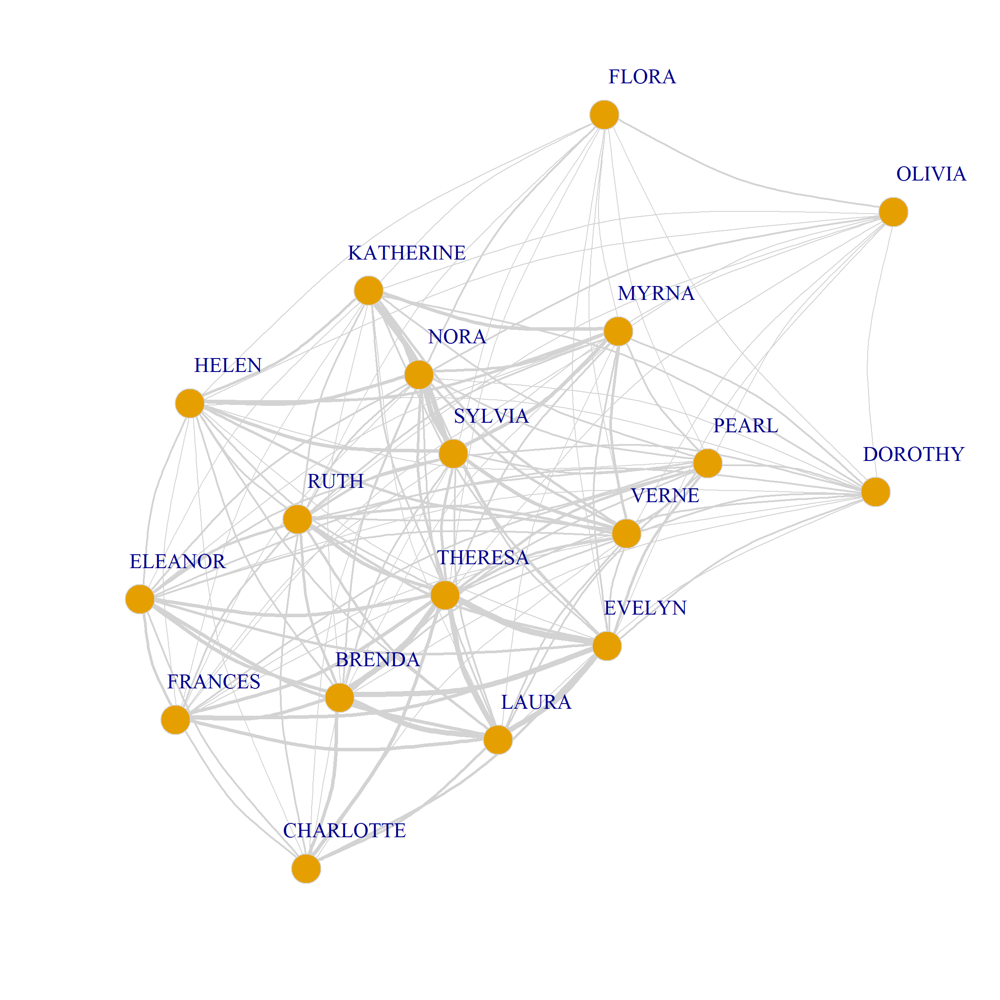
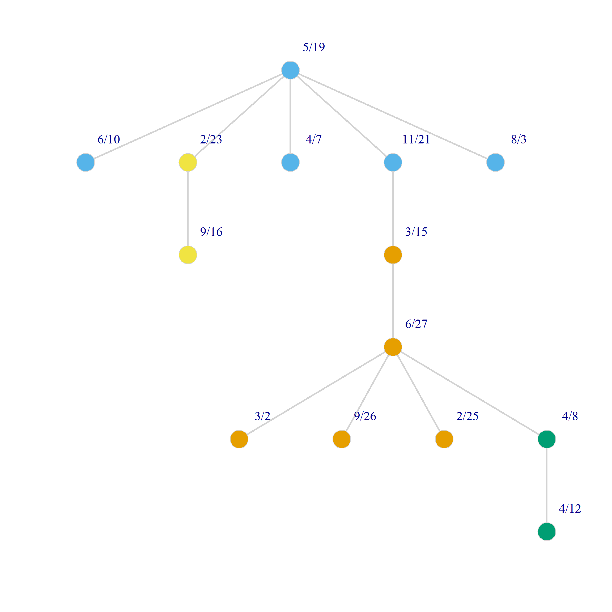

The Duality of Persons and Groups
Recall that in the one-mode case, multiplying the adjacency matrix times its transpose yields the common neighbors matrix \(\mathbf{M}\):
\[ \mathbf{M} = \mathbf{A}\mathbf{A}^T \]
As famously noted by Breiger (1974), doing the same for the affiliation matrix of a two-mode network also returns the common-neighbors matrix, but because objects in one mode can only connect to objects in another mode, this also reveals the duality of persons and groups: The connections between people are made up of the groups they share, and the connections between groups are revealed by the groups they share.
Thus, computing the common neighbors matrix for both persons and groups (also called the projection of the two-mode network into each of its modes) produces a one-mode similarity matrix between people and groups, where the similarities are defined by the number of objects in the other mode that they share.
For the people the relevant projection is:
\[ \mathbf{P} = \mathbf{A}\mathbf{A}^T \]
And for the groups:
\[ \mathbf{G} = \mathbf{A}^T\mathbf{A} \]
Let’s see how this works out with real data by loading our usual friend the Southern Women data:
In this case, the above equations yield:
EVELYN LAURA THERESA BRENDA CHARLOTTE FRANCES ELEANOR PEARL RUTH
EVELYN 8 6 7 6 3 4 3 3 3
LAURA 6 7 6 6 3 4 4 2 3
THERESA 7 6 8 6 4 4 4 3 4
BRENDA 6 6 6 7 4 4 4 2 3
CHARLOTTE 3 3 4 4 4 2 2 0 2
FRANCES 4 4 4 4 2 4 3 2 2
ELEANOR 3 4 4 4 2 3 4 2 3
PEARL 3 2 3 2 0 2 2 3 2
RUTH 3 3 4 3 2 2 3 2 4
VERNE 2 2 3 2 1 1 2 2 3
MYRNA 2 1 2 1 0 1 1 2 2
KATHERINE 2 1 2 1 0 1 1 2 2
SYLVIA 2 2 3 2 1 1 2 2 3
NORA 2 2 3 2 1 1 2 2 2
HELEN 1 2 2 2 1 1 2 1 2
DOROTHY 2 1 2 1 0 1 1 2 2
OLIVIA 1 0 1 0 0 0 0 1 1
FLORA 1 0 1 0 0 0 0 1 1
VERNE MYRNA KATHERINE SYLVIA NORA HELEN DOROTHY OLIVIA FLORA
EVELYN 2 2 2 2 2 1 2 1 1
LAURA 2 1 1 2 2 2 1 0 0
THERESA 3 2 2 3 3 2 2 1 1
BRENDA 2 1 1 2 2 2 1 0 0
CHARLOTTE 1 0 0 1 1 1 0 0 0
FRANCES 1 1 1 1 1 1 1 0 0
ELEANOR 2 1 1 2 2 2 1 0 0
PEARL 2 2 2 2 2 1 2 1 1
RUTH 3 2 2 3 2 2 2 1 1
VERNE 4 3 3 4 3 3 2 1 1
MYRNA 3 4 4 4 3 3 2 1 1
KATHERINE 3 4 6 6 5 3 2 1 1
SYLVIA 4 4 6 7 6 4 2 1 1
NORA 3 3 5 6 8 4 1 2 2
HELEN 3 3 3 4 4 5 1 1 1
DOROTHY 2 2 2 2 1 1 2 1 1
OLIVIA 1 1 1 1 2 1 1 2 2
FLORA 1 1 1 1 2 1 1 2 2 6/27 3/2 4/12 9/26 2/25 5/19 3/15 9/16 4/8 6/10 2/23 4/7 11/21 8/3
6/27 3 2 3 2 3 3 2 3 1 0 0 0 0 0
3/2 2 3 3 2 3 3 2 3 2 0 0 0 0 0
4/12 3 3 6 4 6 5 4 5 2 0 0 0 0 0
9/26 2 2 4 4 4 3 3 3 2 0 0 0 0 0
2/25 3 3 6 4 8 6 6 7 3 0 0 0 0 0
5/19 3 3 5 3 6 8 5 7 4 1 1 1 1 1
3/15 2 2 4 3 6 5 10 8 5 3 2 4 2 2
9/16 3 3 5 3 7 7 8 14 9 4 1 5 2 2
4/8 1 2 2 2 3 4 5 9 12 4 3 5 3 3
6/10 0 0 0 0 0 1 3 4 4 5 2 5 3 3
2/23 0 0 0 0 0 1 2 1 3 2 4 2 1 1
4/7 0 0 0 0 0 1 4 5 5 5 2 6 3 3
11/21 0 0 0 0 0 1 2 2 3 3 1 3 3 3
8/3 0 0 0 0 0 1 2 2 3 3 1 3 3 3The off-diagonal entries of these square person by person (group by group) matrices is the number of groups (people) shared by each person (group) and the diagonals are the number of memberships of each person (the size of each group/event).
In igraph the relevant function is called bipartite_projection. It takes a graph as an input and returns a list containing igraph graph objects of both projections by default:
In the graph objects produced by the bipartite_projection function, the actual shared memberships and shared members are stored as an attribute of each edge called weight used in the plotting code below to set the edge.width:
$weight
[1] 6 6 7 3 4 3 3 3 2 2 2 2 2 1 2 1 1 6 6 3 4 4 3 2 2 2 2 2 1 1 1 6 4 4 4 4 3
[38] 3 3 3 2 2 2 2 1 1 4 4 4 3 2 2 2 2 2 1 1 1 2 2 2 1 1 1 1 3 2 2 1 1 1 1 1 1
[75] 1 3 2 2 2 2 2 1 1 1 2 2 2 2 2 2 1 2 1 1 3 3 2 2 2 2 2 1 1 4 3 3 3 3 2 1 1
[112] 4 4 3 2 3 1 1 6 3 2 5 1 1 6 4 2 1 1 4 1 2 2 1 1 1 1 1 2$weight
[1] 2 3 2 3 3 3 1 2 3 2 3 3 3 2 2 4 6 5 5 2 4 4 3 3 2 3 6 7 3 6 7 4 5 1 1 1 1 1
[39] 8 5 4 3 2 2 2 9 5 4 2 2 1 5 4 3 3 3 5 3 3 2 2 1 1 3 3 3So to get the weighted projection matrix, we need to type:
EVELYN LAURA THERESA BRENDA CHARLOTTE FRANCES ELEANOR PEARL RUTH
EVELYN 0 6 7 6 3 4 3 3 3
LAURA 6 0 6 6 3 4 4 2 3
THERESA 7 6 0 6 4 4 4 3 4
BRENDA 6 6 6 0 4 4 4 2 3
CHARLOTTE 3 3 4 4 0 2 2 0 2
FRANCES 4 4 4 4 2 0 3 2 2
ELEANOR 3 4 4 4 2 3 0 2 3
PEARL 3 2 3 2 0 2 2 0 2
RUTH 3 3 4 3 2 2 3 2 0
VERNE 2 2 3 2 1 1 2 2 3
MYRNA 2 1 2 1 0 1 1 2 2
KATHERINE 2 1 2 1 0 1 1 2 2
SYLVIA 2 2 3 2 1 1 2 2 3
NORA 2 2 3 2 1 1 2 2 2
HELEN 1 2 2 2 1 1 2 1 2
DOROTHY 2 1 2 1 0 1 1 2 2
OLIVIA 1 0 1 0 0 0 0 1 1
FLORA 1 0 1 0 0 0 0 1 1
VERNE MYRNA KATHERINE SYLVIA NORA HELEN DOROTHY OLIVIA FLORA
EVELYN 2 2 2 2 2 1 2 1 1
LAURA 2 1 1 2 2 2 1 0 0
THERESA 3 2 2 3 3 2 2 1 1
BRENDA 2 1 1 2 2 2 1 0 0
CHARLOTTE 1 0 0 1 1 1 0 0 0
FRANCES 1 1 1 1 1 1 1 0 0
ELEANOR 2 1 1 2 2 2 1 0 0
PEARL 2 2 2 2 2 1 2 1 1
RUTH 3 2 2 3 2 2 2 1 1
VERNE 0 3 3 4 3 3 2 1 1
MYRNA 3 0 4 4 3 3 2 1 1
KATHERINE 3 4 0 6 5 3 2 1 1
SYLVIA 4 4 6 0 6 4 2 1 1
NORA 3 3 5 6 0 4 1 2 2
HELEN 3 3 3 4 4 0 1 1 1
DOROTHY 2 2 2 2 1 1 0 1 1
OLIVIA 1 1 1 1 2 1 1 0 2
FLORA 1 1 1 1 2 1 1 2 0 6/27 3/2 4/12 9/26 2/25 5/19 3/15 9/16 4/8 6/10 2/23 4/7 11/21 8/3
6/27 0 2 3 2 3 3 2 3 1 0 0 0 0 0
3/2 2 0 3 2 3 3 2 3 2 0 0 0 0 0
4/12 3 3 0 4 6 5 4 5 2 0 0 0 0 0
9/26 2 2 4 0 4 3 3 3 2 0 0 0 0 0
2/25 3 3 6 4 0 6 6 7 3 0 0 0 0 0
5/19 3 3 5 3 6 0 5 7 4 1 1 1 1 1
3/15 2 2 4 3 6 5 0 8 5 3 2 4 2 2
9/16 3 3 5 3 7 7 8 0 9 4 1 5 2 2
4/8 1 2 2 2 3 4 5 9 0 4 3 5 3 3
6/10 0 0 0 0 0 1 3 4 4 0 2 5 3 3
2/23 0 0 0 0 0 1 2 1 3 2 0 2 1 1
4/7 0 0 0 0 0 1 4 5 5 5 2 0 3 3
11/21 0 0 0 0 0 1 2 2 3 3 1 3 0 3
8/3 0 0 0 0 0 1 2 2 3 3 1 3 3 0We can also use the weights to draw a weighted graph network plot of people and group projections. All we have to do is set the edge.with argument to the value of the edge weight attribute in the corresponding graph:
set.seed(123)
plot(G.p,
vertex.size=8, vertex.frame.color="lightgray",
vertex.label.dist=2, edge.curved=0.2,
vertex.label.cex = 1.5, edge.color = "lightgray",
edge.width = E(G.p)$weight)
set.seed(123)
plot(G.g,
vertex.size=8, vertex.frame.color="lightgray",
vertex.label.dist=2, edge.curved=0.2,
vertex.label.cex = 1.5, edge.color = "lightgray",
edge.width = E(G.g)$weight)
Note that because both G.p and G.g are weighted graphs we can calculate the weighted version of degree for both persons and groups from them (sometimes called the vertex strength).
In igraph we can do this using the strength function, which takes a weighted graph object as input:
EVELYN LAURA THERESA BRENDA CHARLOTTE FRANCES ELEANOR PEARL
50 45 57 46 24 32 36 31
RUTH VERNE MYRNA KATHERINE SYLVIA NORA HELEN DOROTHY
40 38 33 37 46 43 34 24
OLIVIA FLORA
14 14 6/27 3/2 4/12 9/26 2/25 5/19 3/15 9/16 4/8 6/10 2/23 4/7 11/21
19 20 32 23 38 41 48 59 46 25 13 28 18
8/3
18 Interestingly, as noted by Faust (1997, 167), there is a (dual!) mathematical connection between the strength of each vertex in the weighted projection and the centrality of the nodes from the other set they are connected to:
For people, the vertex strength is equal to the sum of the sizes of the groups they belong to minus their own degree.
For groups, the vertex strength is equal to the sum of the memberships of the people that belong to them, minus their own size.
We can verify this relationship for \(EVELYN\):
sum.size.evelyn <- sum(A["EVELYN", ] * degree(g)[which(V(g)$type == TRUE)]) #sum of the sizes of the groups Evelyn belongs to
sum.size.evelyn - degree(g)[which(V(g)$name == "EVELYN")]EVELYN
50 Which is indeed Evelyn’s vertex strength.
Dually, the same relation applies to groups:
sum.mem.6.27 <- sum(A[, "6/27"] * degree(g)[which(V(g)$type == FALSE)]) #sum of the memberships of people in the first group
sum.mem.6.27 - degree(g)[which(V(g)$name == "6/27")]6/27
19 Which is indeed the vertex strength of the event held on 6/27.
Visualizing Dual Projections Using the Minimum Spanning Tree
As we just saw projecting the original biadjacency matrix using Breiger’s (1974) approach results in two weighted one mode networks. Because there is an edge between two persons (groups) if they share at least one group (person) the resulting graphs tend to be dense featuring high levels of connectivity between nodes as with Figure 1. This can make it hard to discern the connectivity structure of the projected networks and detect patterns.
One approach to simplifying the visual projections of two-mode networks is to calculate the resulting weighted graph’s minimum spanning tree. For any weighted network, the minimum spanning tree is the graph that connects all nodes using the smallest number of edges that form a tree1, which happens to be \(N-1\) where \(N\) is the number of nodes.
To do this, we can follow Kruskal’s Algorithm. It goes like this:
- First, we create an edgelist containing each of the edge weights of the one-mode projection graph.
- Then we sort the edgelist by weight in increasing order (smallest weights first).
- Then, we create an undirected empty graph with \(N\) nodes.
- Now, we go down the edgelist adding edges to the empty graph one at a time, at each step checking that:
- We are not connecting nodes that have already been connected (avoiding multiedges).
- Additional edges do not create cycles (as the resulting graph would be no longer a tree).
We stop when we have the desired number of edges (\(N-1\)), meaning all nodes are connected in the tree.
Here’s a function that does all of this, taking the weighted projection igraph object as input and returning the minimum spanning tree:
make.mst <- function(x) {
E <- data.frame(as_edgelist(x), w = E(x)$weight) #creating weighted edge list
E <- E[order(E$w), ] #ordering by edge weight
Tr <- make_empty_graph(n = vcount(x), directed = FALSE) #creating empty graph
V(Tr)$name <- V(x)$name
k <- 1
n.e <- ecount(Tr)
n.v <- vcount(Tr) - 1
while(n.e < n.v) {
i <- which(V(x)$name == E[k,1])
j <- which(V(x)$name == E[k,2])
if (are_adjacent(Tr, i, j) == 0) { #checking nodes are not adjacent
Tr <- add_edges(Tr, c(i,j)) #add edge
n.e <- ecount(Tr) #new edge id
if (is_acyclic(Tr) == 0) { #checking new edge does not add a cycle
Tr <- delete_edges(Tr, n.e) # delete edge if it adds a cycle
}
}
n.e <- ecount(Tr)
k <- k + 1
}
return(Tr)
}We can now build the minimum spanning tree graph for each weighted projection:
And here’s a point and line plot the minimum spanning tree for persons and groups in the Southern Women data (we use the layout_as_tree option in igraph):
set.seed(123)
plot(Tr.p,
vertex.size=8, vertex.frame.color="lightgray",
vertex.label.dist=2, layout=layout_as_tree,
vertex.label.cex = 1.5, edge.color = "lightgray",
edge.width = 3, vertex.color = cluster_leading_eigen(Tr.p)$membership)
set.seed(123)
plot(Tr.g,
vertex.size=8, vertex.frame.color="lightgray",
vertex.label.dist=2, layout=layout_as_tree,
vertex.label.cex = 1.5, edge.color = "lightgray",
edge.width = 3, vertex.color = cluster_leading_eigen(Tr.g)$membership)
References
Footnotes
Recall that a tree is a connected graph without any cycles.↩︎